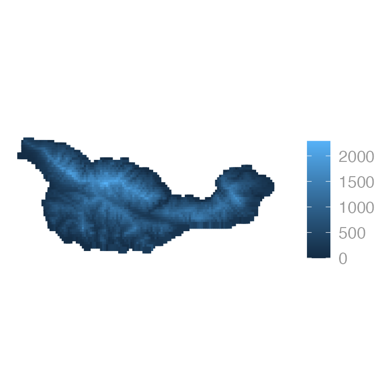
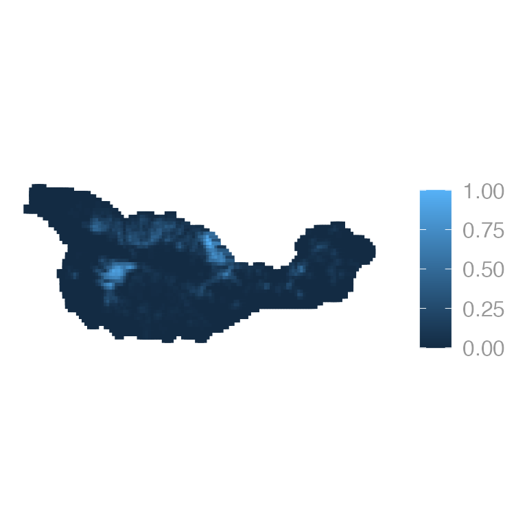
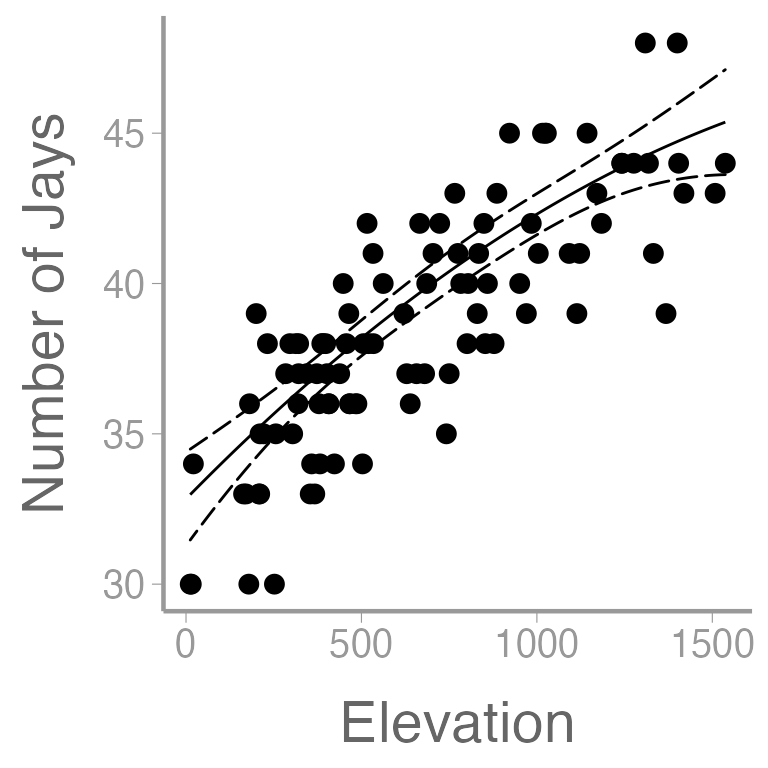
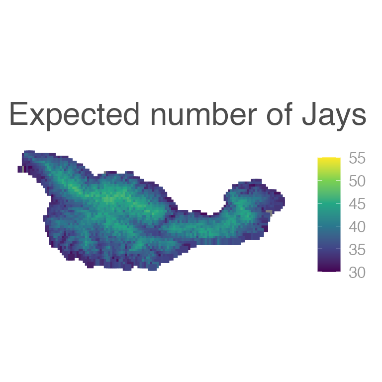
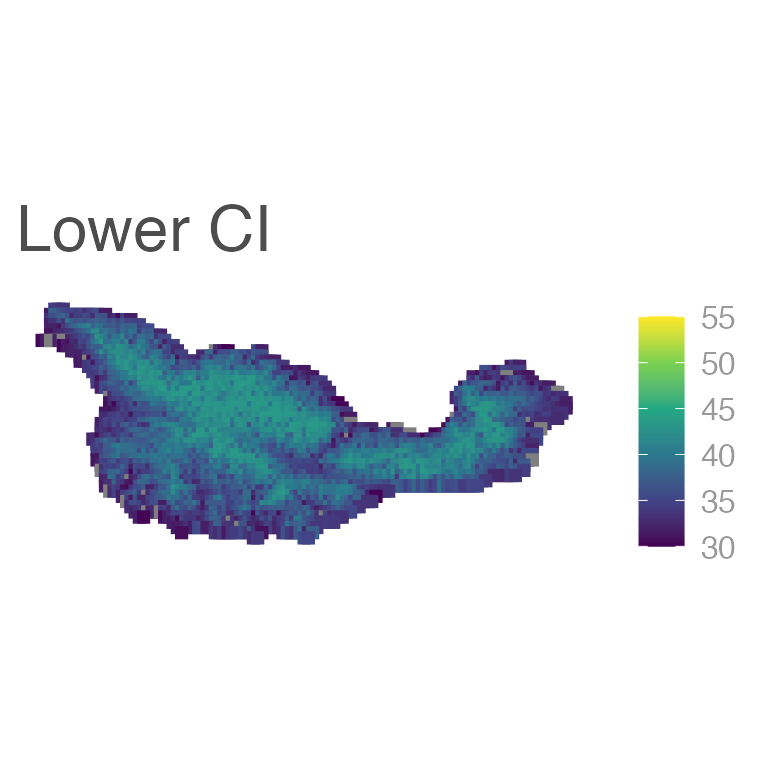
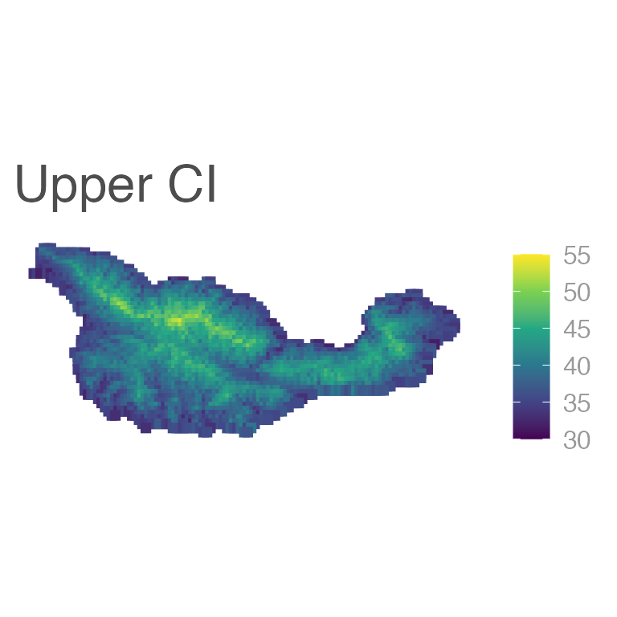

Lab 13: Linear models
FANR 6750: Experimental Methods in Forestry and Natural Resources Research
Fall 2022
lab13_lm.RmdLinear model review
Remember from lecture that a linear model is an equation of the form:
\[\large y_i = \beta_0 + \beta_1x_{i1} + \beta_2x_{i2} + . . . + \beta_px_{ip} + \epsilon_i\]
where the \(\beta\)’s are coefficients, and the \(x\) values are predictor variables (or dummy variables for categorical predictors).
This equation is often expressed in matrix notation as:
\[\large y = \mathbf{X\beta} + \epsilon\]
where \(X\) is a design matrix and \(\beta\) is a vector of coefficients.
The Island Scrub Jay (Aphelocoma insularis)

For this lab, we’ll use the Island Scrub Jay data from lecture:
library(FANR6750)
# Survey location/predictor data
data("cruzData")
head(cruzData)
# Jay counts
data("jayData")
head(jayData)| x | y | elevation | forest | chaparral | habitat | seeds |
|---|---|---|---|---|---|---|
| 230737 | 3774324 | 241 | 0 | 0 | Oak | Low |
| 231037 | 3774324 | 323 | 0 | 0 | Pine | Med |
| 231337 | 3774324 | 277 | 0 | 0 | Pine | High |
| 230437 | 3774024 | 13 | 0 | 0 | Oak | Med |
| 230737 | 3774024 | 590 | 0 | 0 | Oak | High |
| 231037 | 3774024 | 533 | 0 | 0 | Oak | Low |
| x | y | elevation | forest | chaparral | habitat | seeds | jays |
|---|---|---|---|---|---|---|---|
| 258637 | 3764124 | 423 | 0.00 | 0.02 | Oak | Med | 34 |
| 261937 | 3769224 | 506 | 0.10 | 0.45 | Oak | Med | 38 |
| 246337 | 3764124 | 859 | 0.00 | 0.26 | Oak | High | 40 |
| 239437 | 3763524 | 1508 | 0.02 | 0.03 | Pine | Med | 43 |
| 239437 | 3767724 | 483 | 0.26 | 0.37 | Oak | Med | 36 |
| 236437 | 3769524 | 830 | 0.00 | 0.01 | Oak | Low | 39 |
The cruzData object has one row for each of the 2787
grid cell covering the island. The jayData object has
counts of jays and habitat predictors for 100 (fake) survey
locations.
Maps in R
Although we do not have time to fully cover it in this course,
R has an excellent GIS and mapping capabilities. We can
analyze spatial data make nice maps using a number of packages,
including raster and sf. For example, we can
convert the jay data to a simple features (sf)
spatial object, which ggplot2 knows how to use for
maps:
# Set CRS
projcrs <- "+proj=longlat +datum=WGS84 +no_defs +ellps=WGS84 +towgs84=0,0,0"
# Covert data frame to sf data frame
cruz_sf <- sf::st_as_sf(x = cruzData, coords = c("x", "y"), crs = projcrs)
# Map elevation
ggplot(cruz_sf) +
geom_sf(aes(color = elevation), shape = 15, size = 2)
Or forest cover:

Or chaparral with the survey locations:
jay_sf <- sf::st_as_sf(x = jayData, coords = c("x", "y"), crs = projcrs)
ggplot() +
geom_sf(data = cruz_sf, aes(color = chaparral), shape = 15, size = 2) +
geom_sf(data = jay_sf, color = "red")
Fit some models
Simple linear regression
fm1 <- lm(jays ~ elevation, data = jayData)
summary(fm1)
#>
#> Call:
#> lm(formula = jays ~ elevation, data = jayData)
#>
#> Residuals:
#> Min 1Q Median 3Q Max
#> -5.487 -1.754 0.157 1.616 4.615
#>
#> Coefficients:
#> Estimate Std. Error t value Pr(>|t|)
#> (Intercept) 3.31e+01 4.54e-01 72.9 <2e-16 ***
#> elevation 8.34e-03 5.95e-04 14.0 <2e-16 ***
#> ---
#> Signif. codes: 0 '***' 0.001 '**' 0.01 '*' 0.05 '.' 0.1 ' ' 1
#>
#> Residual standard error: 2.28 on 98 degrees of freedom
#> Multiple R-squared: 0.667, Adjusted R-squared: 0.664
#> F-statistic: 196 on 1 and 98 DF, p-value: <2e-16Linear regression with quadratic effects
fm2 <- lm(jays ~ elevation + I(elevation^2), data = jayData)
summary(fm2)
#>
#> Call:
#> lm(formula = jays ~ elevation + I(elevation^2), data = jayData)
#>
#> Residuals:
#> Min 1Q Median 3Q Max
#> -4.84 -1.46 0.13 1.59 4.79
#>
#> Coefficients:
#> Estimate Std. Error t value Pr(>|t|)
#> (Intercept) 3.16e+01 7.63e-01 41.43 < 2e-16 ***
#> elevation 1.37e-02 2.34e-03 5.84 6.9e-08 ***
#> I(elevation^2) -3.54e-06 1.50e-06 -2.36 0.02 *
#> ---
#> Signif. codes: 0 '***' 0.001 '**' 0.01 '*' 0.05 '.' 0.1 ' ' 1
#>
#> Residual standard error: 2.23 on 97 degrees of freedom
#> Multiple R-squared: 0.685, Adjusted R-squared: 0.679
#> F-statistic: 106 on 2 and 97 DF, p-value: <2e-16What is the quadratic effect measuring? How do we interpret the coefficients from this model?
Multiple linear regression
fm3 <- lm(jays ~ elevation + chaparral, data = jayData)
summary(fm3)
#>
#> Call:
#> lm(formula = jays ~ elevation + chaparral, data = jayData)
#>
#> Residuals:
#> Min 1Q Median 3Q Max
#> -5.158 -1.578 0.023 1.532 4.600
#>
#> Coefficients:
#> Estimate Std. Error t value Pr(>|t|)
#> (Intercept) 3.28e+01 4.98e-01 65.92 <2e-16 ***
#> elevation 8.22e-03 6.02e-04 13.67 <2e-16 ***
#> chaparral 1.31e+00 1.12e+00 1.16 0.25
#> ---
#> Signif. codes: 0 '***' 0.001 '**' 0.01 '*' 0.05 '.' 0.1 ' ' 1
#>
#> Residual standard error: 2.28 on 97 degrees of freedom
#> Multiple R-squared: 0.672, Adjusted R-squared: 0.665
#> F-statistic: 99.2 on 2 and 97 DF, p-value: <2e-16How do we interpret the elevation and chaparral parameters in this model?
One-way ANOVA
fm4 <- lm(jays ~ habitat, data = jayData)
summary(fm4)
#>
#> Call:
#> lm(formula = jays ~ habitat, data = jayData)
#>
#> Residuals:
#> Min 1Q Median 3Q Max
#> -7.914 -2.368 -0.368 3.086 8.632
#>
#> Coefficients:
#> Estimate Std. Error t value Pr(>|t|)
#> (Intercept) 35.88 1.36 26.46 <2e-16 ***
#> habitatOak 3.49 1.45 2.41 0.018 *
#> habitatPine 2.04 1.50 1.36 0.178
#> ---
#> Signif. codes: 0 '***' 0.001 '**' 0.01 '*' 0.05 '.' 0.1 ' ' 1
#>
#> Residual standard error: 3.84 on 97 degrees of freedom
#> Multiple R-squared: 0.0713, Adjusted R-squared: 0.0521
#> F-statistic: 3.72 on 2 and 97 DF, p-value: 0.0277ANCOVA
fm5 <- lm(jays ~ habitat + elevation, data = jayData)
summary(fm5)
#>
#> Call:
#> lm(formula = jays ~ habitat + elevation, data = jayData)
#>
#> Residuals:
#> Min 1Q Median 3Q Max
#> -5.033 -1.536 0.009 1.469 4.239
#>
#> Coefficients:
#> Estimate Std. Error t value Pr(>|t|)
#> (Intercept) 3.07e+01 8.08e-01 38.00 < 2e-16 ***
#> habitatOak 3.17e+00 7.85e-01 4.03 0.00011 ***
#> habitatPine 1.70e+00 8.15e-01 2.08 0.04010 *
#> elevation 8.29e-03 5.41e-04 15.31 < 2e-16 ***
#> ---
#> Signif. codes: 0 '***' 0.001 '**' 0.01 '*' 0.05 '.' 0.1 ' ' 1
#>
#> Residual standard error: 2.08 on 96 degrees of freedom
#> Multiple R-squared: 0.73, Adjusted R-squared: 0.722
#> F-statistic: 86.6 on 3 and 96 DF, p-value: <2e-16One factor and continuous covariates with quadratic effects
fm6 <- lm(jays ~ habitat + elevation + I(elevation^2) + chaparral, data = jayData)
summary(fm6)
#>
#> Call:
#> lm(formula = jays ~ habitat + elevation + I(elevation^2) + chaparral,
#> data = jayData)
#>
#> Residuals:
#> Min 1Q Median 3Q Max
#> -5.316 -1.430 0.017 1.380 4.067
#>
#> Coefficients:
#> Estimate Std. Error t value Pr(>|t|)
#> (Intercept) 2.96e+01 9.99e-01 29.61 < 2e-16 ***
#> habitatOak 3.07e+00 7.79e-01 3.94 0.00015 ***
#> habitatPine 1.80e+00 8.11e-01 2.22 0.02864 *
#> elevation 1.19e-02 2.25e-03 5.29 7.9e-07 ***
#> I(elevation^2) -2.45e-06 1.44e-06 -1.70 0.09207 .
#> chaparral 7.89e-01 1.03e+00 0.77 0.44418
#> ---
#> Signif. codes: 0 '***' 0.001 '**' 0.01 '*' 0.05 '.' 0.1 ' ' 1
#>
#> Residual standard error: 2.06 on 94 degrees of freedom
#> Multiple R-squared: 0.741, Adjusted R-squared: 0.727
#> F-statistic: 53.8 on 5 and 94 DF, p-value: <2e-16Now things are getting pretty complicated. Be sure you can explain, in plain English, what each parameter represents
Let’s also take a moment to make some visualizations. For example, understanding quadratic effects is often easiest by visualizing predicted values:
First, create a sequence of values of elevation, holding other predictors constant
nd1 <- data.frame(habitat = "Oak", elevation = seq(min(jayData$elev),
max(jayData$elev), length=100),
chaparral=mean(jayData$chaparral))Next, obtain the predictions from the fitted model:
E6.elev <- predict(fm6, newdata = nd1,
type = "response",
se.fit = TRUE,
interval = "confidence")
E6.elev <- cbind(E6.elev$fit, nd1)
head(E6.elev)
#> fit lwr upr habitat elevation chaparral
#> 1 32.98 31.47 34.49 Oak 12.00 0.2407
#> 2 33.16 31.71 34.61 Oak 27.40 0.2407
#> 3 33.34 31.95 34.73 Oak 42.81 0.2407
#> 4 33.52 32.19 34.86 Oak 58.21 0.2407
#> 5 33.70 32.42 34.98 Oak 73.62 0.2407
#> 6 33.88 32.65 35.11 Oak 89.02 0.2407And finally, make the plot:
ggplot() +
geom_point(data = jayData, aes(x = elevation, y = jays)) +
geom_path(data = E6.elev, aes(x = elevation, y = fit)) +
geom_ribbon(data = E6.elev, aes(x = elevation, ymin = lwr, ymax = upr),
fill = NA, color = "black", linetype = "longdash") +
scale_x_continuous("Elevation") +
scale_y_continuous("Number of Jays")
We can also predict the number of jays at each point on the entire island:
E6 <- predict(fm6, type = "response",
newdata = cruzData,
interval = "confidence")
E6 <- cbind(cruzData[,c("x","y")], E6)
E6_sf <- sf::st_as_sf(x = E6, coords = c("x", "y"), crs = projcrs)
ggplot(E6_sf) +
geom_sf(aes(color = fit), shape = 15, size = 2) +
scale_color_viridis_c(limits = c(30, 55)) +
labs(title = "Expected number of Jays")
Although not often included in papers, it’s also important to show uncertainy in these predictions:
ggplot(E6_sf) +
geom_sf(aes(color = lwr), shape = 15, size = 2) +
scale_color_viridis_c(limits = c(30, 55)) +
labs(title = "Lower CI")
ggplot(E6_sf) +
geom_sf(aes(color = upr), shape = 15, size = 2) +
scale_color_viridis_c(limits = c(30, 55)) +
labs(title = "Upper CI")
Another way to obtain the predictions
We could also obtain the predictions as follows:
X <- model.matrix(~habitat + elevation + I(elevation^2) + chaparral, data = cruzData)
beta <- coef(fm6) # beta estimates
E <- X %*% beta # expected number of jays at each pixel
head(E, n=4)
#> [,1]
#> 1 35.38
#> 2 34.97
#> 3 34.49
#> 4 32.80The predict() function may often be a little easier but
understanding how to do obtain the predictions “by hand” like this is a
good check on whether you understand 1) the design matrix, and 2) the
relationship between the design matrix, model parameters, and predicted
values.
Assignment: Species Richness in Switzerland
Birds are sampled at 267 locations (quadrats) as part of the Swiss breeding bird survey
The following predictor variables are available: elevation, percent cover of forest, and the presence of water
The country-wide data can be loaded using:
The survey data can be loaded using:
data("swissData")Create an R markdown report to do the following:
Fit 4 models of species richness using
lm(). At least one model should include an interaction, and one model should include quadratic effectsInterpret, in plain English, the \(\beta\) parameter estimates for each model.
Create the design matrix for one of the models, and (matrix) multiply it by the \(\beta\) coefficients to compute the expected number of species at each plot
Use
predict()to plot the relationship between expected species richness and the predictor variable with the quadratic effects. Include 95% CI in your plot.Using the model with the interaction, predict species richness at each location in Switzerland. Include a map of the predicted values (you may use whatever graphing package you like to make the map but it must be made in
Rand your code must be included).
You may format the report however you like but it should be well-organized, with relevant headers, plain text, and the elements described above.
As always:
Be sure the output type is set to:
output: html_documentTitle the document:
title: "Homework 5: Linear Regression"Be sure to include your first and last name in the
authorsectionBe sure to set
echo = TRUEin allRchunks so we can see both your code and the outputPlease upload both the
htmland.Rmdfiles when you submit your assignmentSee the R Markdown reference sheet for help with creating
Rchunks, equations, tables, etc.See the “Creating publication-quality graphics” reference sheet for tips on formatting figures